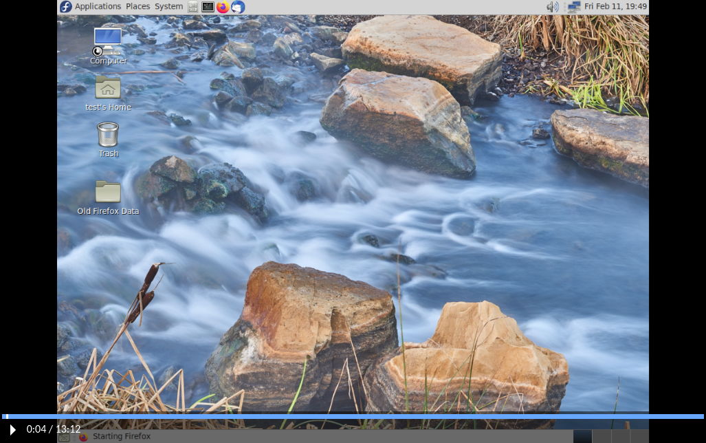
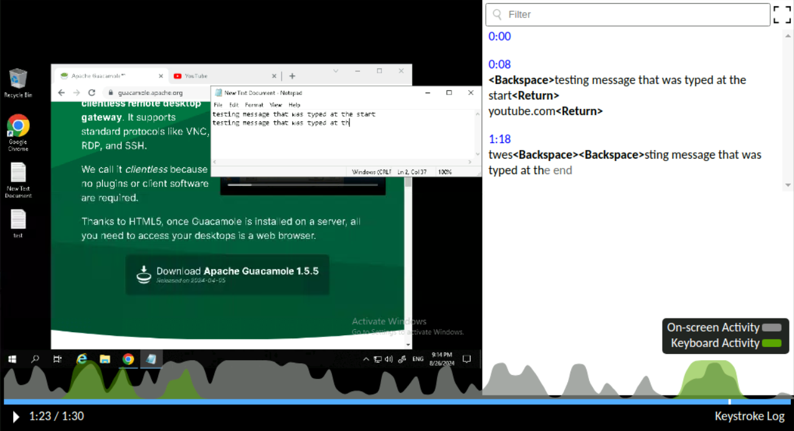
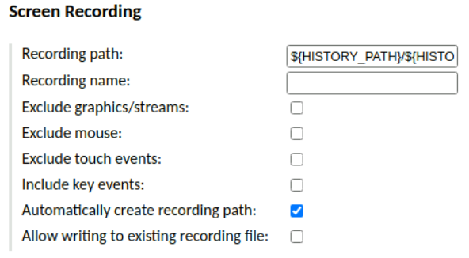
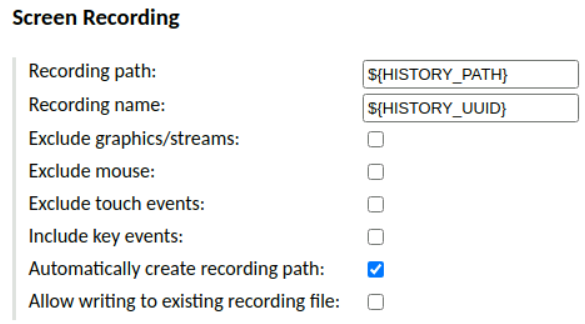

Viewing session recordings in-browser#
Guacamole supports recording activity within remote desktop sessions
such that it can be played back and reviewed later. Graphical recordings can be
converted to video using the guacenc tool (part of
guacamole-server) or can be played back directly
in the browser in their native format using Guacamole itself. This has several
benefits:
Recordings can be played back while the session is underway.
Recordings need not be re-encoded as traditional video, an intensive process that often results in a larger file.
It is very easy to locate and play back the recording for a session when doing so only involves clicking a button in the connection history.
This chapter of the documentation covers installing and using the extension that allows recordings stored on disk to be played back in the browser.
Warning
You will need to restart the Guacamole web application in order to complete configuration. Doing this will disconnect all active users, so please:
Do this only at a time that you can tolerate service unavailability, such as a scheduled maintenance window.
Keep in mind that configuration errors may prevent Guacamole from starting back up.
How recording storage and playback works#
The Guacamole web application includes its own support for playing back recordings from the history screen in the administration interface, but that support cannot automatically know where those recordings are stored nor how they are named. The extension documented here provides exactly that missing piece, allowing the web application to find recordings on disk so long as they are named appropriately and stored in a specific location.
Each history entry has a deterministic, internal, unique identifier called its
UUID, and all supported database backends make this UUID available ahead of
time with the ${HISTORY_UUID} parameter token. This provides a reliable way
for data stored outside the database to be associated with history entries
that are otherwise stored purely inside the database, and it is this UUID
that the extension searches for when locating the recording for a history entry.
When a user lists the history of a connection, the recording storage extension additionally searches a predetermined location for session recordings that match either of the following criteria:
The recording’s filename is identical to the history entry UUID and is directly within the search path.
The recording has any name at all and is within a directory whose filename is identical to the history entry UUID and is directly within the search path.
If such a recording is found, it is made available to any user that can view the history entry. The availability of a recording is displayed as a “View” link in the “Logs” column of the history table:

Clicking on that link navigates to a screen with a player that loads the recording and allows it to be played back:

Version 1.6.0 of Guacamole introduces a feature that allows for key events in the recording to be displayed in a format similar to the guaclog utility, making it easy for administrators to scroll or search through the output for key events. The amount and type of data shown in this output will depend upon the options selected when recording is enabled - for example, keystrokes will not be available if keystroke logging has not been enabled for a connection.
Additionally, heatmaps of screen update activity and key events (if captured) will be displayed when the progress bar is hovered.

Installing/Enabling the recording storage extension#
Guacamole is configured differently depending on whether Guacamole was installed natively or using the provided Docker images. The documentation here covers both methods.
Native installations of Guacamole under Apache Tomcat
or similar are configured by modifying the contents of GUACAMOLE_HOME
(Guacamole’s configuration directory), which is located at
/etc/guacamole by default and may need to be created first:
Download
guacamole-history-recording-storage-1.6.0.tar.gzfrom the release page for Apache Guacamole 1.6.0 and extract it.Create the
GUACAMOLE_HOME/extensionsdirectory, if it does not already exist.Copy the
guacamole-history-recording-storage-1.6.0.jarfile from the contents of the archive toGUACAMOLE_HOME/extensions/.Proceed with the configuring Guacamole for the newly installed extension as described below. The extension will be loaded after Guacamole has been restarted.
Note
Download and documentation links for all officially supported extensions for a particular version of Guacamole are always provided in the release notes for that version. The copy of the documentation you are reading now is from Apache Guacamole 1.6.0.
If you are using a different version of Guacamole, please locate that version within the release archives and consult the documentation for that release instead.
Docker installations of Guacamole include a bundled copy of Apache
Tomcat and are configured using environment
variables. The startup process of the Docker image automatically populates
GUACAMOLE_HOME (Guacamole’s configuration directory) based
on the values of these variables.
- If deploying Guacamole using Docker Compose:
You will need to add at least one relevant environment variable to the
environmentsection of yourguacamole/guacamolecontainer, such as theRECORDING_ENABLEDenvironment variable:RECORDING_ENABLED: "true"
- If instead deploying Guacamole by running
docker runmanually: The same environment variable(s) will need to be provided using the
-eoption. For example:$ docker run --name some-guacamole \ -e RECORDING_ENABLED="true" \ -d -p 8080:8080 guacamole/guacamole
If RECORDING_ENABLED is set to false, the extension will NOT be
installed, even if other related environment variables have been set. This can
be used to temporarily disable usage of an extension without needing to remove
all other related configuration.
You don’t strictly need to set RECORDING_ENABLED if other related
environment variables are provided, but the extension will be installed only if
at least one related environment variable is set.
Preparing a directory for recording storage#
By default, the recording storage extension will search within
/var/lib/guacamole/recordings for the recordings associated with a
connection. Unless you or a third-party installation tool have created this
directory, this directory will not exist and you will need to create it
manually:
$ mkdir -p /var/lib/guacamole/recordings
You can also use another directory of your own choosing if you
override the default location using the recording-search-path
property.
Important
The following steps will use /var/lib/guacamole/recordings, as it is a
sensible location and the default search path. If you are using a different
path, consider /var/lib/guacamole/recordings below to be a placeholder and
use your own path instead.
Once the path has been created, its permissions and ownerships must be modified such that both of the following are true:
The guacd service can write to the directory.
The servlet container (typically Tomcat) can read from the directory, as well as read any files that are placed within the directory.
The simplest way to do this is to ensure that:
The directory is owned by the user that runs the guacd service and the group that runs the Tomcat service.
The directory has read/write/execute permissions for the user (so that guacd can write here), and read/execute/setgid permissions for the group (so that Tomcat can read here, and so that any files placed here are automatically owned by the Tomcat user’s group).
For example, if your guacd service runs as a dedicated guacd user, and your
Tomcat service runs as a user within the tomcat group:
$ chown guacd:tomcat /var/lib/guacamole/recordings
$ chmod 2750 /var/lib/guacamole/recordings
If set correctly, the ownerships and permissions should look like:
$ ls -ld /var/lib/guacamole/recordings
drwxr-s---. 1 guacd tomcat 0 Feb 5 05:43 /var/lib/guacamole/recordings/
$
Note
If using this extension within a Docker container, you will need to use volumes
to make an external directory available to both the guacamole/guacd
container and the guacamole/guacamole container.
Regardless of what users and groups are already present on the host system, the UID and GID values that apply to permissions in this case will be the UIDs and GIDs used by the containers. The UIDs and GIDs used by the provided Docker images are as follows:
Image name |
User |
UID |
Group |
GID |
|---|---|---|---|---|
|
|
1000 |
|
1000 |
|
|
1001 |
|
1001 |
The UID and GID values used by the containers will not necessarily align with the values already used by your system.
Configuration (optional)#
recording-search-pathThe directory to search for associated session recordings. This property is optional. By default,
/var/lib/guacamole/recordingswill be used.
RECORDING_SEARCH_PATHThe directory to search for associated session recordings. This property is optional. By default,
/var/lib/guacamole/recordingswill be used.
Completing installation#
Guacamole will only reread its configuration and load newly-installed extensions during startup, so Tomcat will need to be restarted before these changes can take effect. Restart Tomcat and give the new functionality a try.
You do not need to restart guacd.
Hint
If Guacamole does not come back online after restarting Tomcat, check the logs. Configuration problems may prevent Guacamole from starting up, and any such errors will be recorded in Tomcat’s logs.
The environment variables that configure the behavior of Docker can only be set at the time the Docker container is created. To apply these configuration changes, you will need to recreate the container.
- If your Guacamole container was deployed using Docker Compose:
Simply making the desired changes to your
docker-compose.ymland runningdocker compose upis sufficient. Docker Compose will automatically recognize that the environment variables of the container have changed and recreate it.- If your Guacamole container was deployed manually (using
docker run): You wll need to manually use
docker rmto remove the old container and then manually recreate it withdocker runand the new environment variables.
Hint
If Guacamole does not come back online after recreating the container, check the Docker logs. Configuration problems may prevent Guacamole from starting up, and any such errors will be recorded in the Docker logs for the Guacamole container.
Configuring connections to use recording storage#
Recordings of connections can be found by the recording storage extension as
long as those connections are configured in either of two ways, each involving
naming a file or directory with the history UUID (${HISTORY_UUID}).
Option 1: Using a subdirectory named with the history UUID (RECOMMENDED)#
If the recording path of a connection is set to
${HISTORY_PATH}/${HISTORY_UUID} and “automatically create path” is checked,
then the recording storage extension will be able to locate the recording by
recognizing that the directory is named with the UUID:

This is the recommended method of storing recordings. This method is the
most flexible in that it allows other recordings like typescripts to be stored
within the same directory, and it allows recordings to be given any name,
including names that are more human-readable, contain ${GUAC_DATE} or
${GUAC_TIME} tokens, etc.
Though the web application does not currently support in-browser playback of typescripts, server logs, or other files that might be of interest to the administrator looking at the history of a connection, it does recognize these files. Following this method will allow any future support for playback of other types of recordings to work even for old recordings.
Option 2: Naming the recording with the history UUID#
If the recording path of a connection is set to ${HISTORY_PATH} and the
recording name is set to ${HISTORY_UUID}, the recording storage extension
will be able to locate the recording by recognizing that its name is identical
to the UUID:
